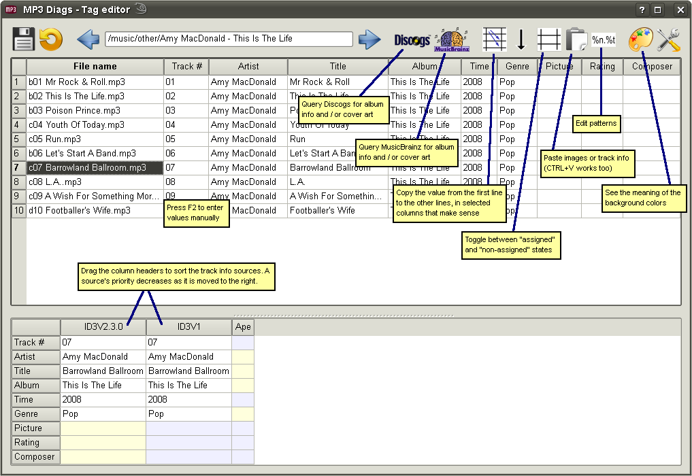

The main purpose of the tag editor is to get track information (artist, title, album, cover art, track number, release date, genre, rating, and composer) from various sources and write everything to an ID3V2.3.0 tag. (Note that although multiple images can be stored in ID3V2, for front cover, back cover and some other things, MP3 Diags only allows you to set the "front cover".)
While there are many other tag editors, the one included in MP3 Diags has one advantage in being aware of what other parts of the program are doing. Other advantages over some other tag editors:
- besides retrieving album information from the Internet, it can also use a file's name, or text pasted from the clipboard
- it can add cover art from the Internet, from the clipboard, or from local files
- it can handle multiple instances of the same tags (e.g. two ID3V2.4.0 tags, each of them storing some information that the other doesn't have)
To some the idea of tagging MP3 files might sound rather obsolete. The reason for this is that many players create a database with your MP3s and add all sorts of information there. That's nice if you only use one player and that player doesn't have the habit of crashing, destroying the database in the process. Many features of MP3 Diags are designed for a different approach, which is that all the information that can be stored inside MP3 files should be stored there, so we shouldn't care about moving to a different player (this includes a different device) and having to recreate the database. First you make sure the MP3 files are OK, then you can play them in Winamp, Amarok, VLC or whatever you prefer, as well as on your iPod.
What's on the screen
Most of the space is taken up by two tables, one above the other. The one above contains the current album. The values in the cells get written to ID3V2.3.0 tags if the information is saved (which can be done explicitly, with the save button, or automatically, is so
configured.
The table below contains the current song. The 10 lines correspond to the 10 fields that the tag editor supports. The columns contain track information as retrieved from various sources:
- Existing ID3, Lyrics, or Ape tags
- Information downloaded from the Internet (from Discogs or from MusicBrainz)
- Information pasted from the clipboard
- Information extracted from the file name
(The last two need
patterns to be defined.)
While some sources may not apply to all the files (e.g. one file might have two ID3V2 tags while another has none), for a given album we take the union of all the sources that apply to that album and display them all, regardless of a file having a particular source or not. It's just that if a source doesn't apply to a file, all the fields in that sorce will be empty (and there's a special background color to identify such sources.)
How the tag editor works
To determine what gets displayed in the "current album" table (and what ultimately gets written to disk), this algorithm is applied for each file:
- If a field is marked as "assigned", its value is whatever it was the last time it was set manually and caused the field to become "assigned"
- Otherwise, for each field: the list with sources is examined from left to right and the first non-null value that is found will also be the value to be displayed in the corresponding cell in "current album"
A field in the "current album" is marked as assigned in either of these cases:
- the user presses F2 in a cell and changes the value of a field manually
- the user clicks on the "Toggle assigned" button, with the sole purpose of fixing the value of a field (or perhaps more fields, because multiple fields can be selected before toggling the state)
- the user assigns an image to the files in the album
These may sound more complicated than they actually are. In many cases all you'll need to do is drag the column headers of the "current file" table to the left or to the right, download an image from the Internet, assign it, and then save.
"Various artists" albums
By default the "single artist" / "various artists" status of an album is ignored, except that there is a button that is disabled but has a picture that changes according to the detected status of the current album (a single difference between the artist fields of two songs is enough to make an album be considered "various artists".) The reason for this is that there is no standard way to deal with "various artists" albums. Various players use various things.
The default behaviour can be changed, though, in the
configuration dialog, where it is possible to tell MP3 Diags to handle "various artists" data in ways compatible with specific players. Currently only Windows Media Player and iTunes are supported, but some other players are probably compatible with these as well. The "various artists" data is displayed in a column called "VA" in the "current album" table and in the row also called "VA" in the "current file" table (the latter is for informative purposes only, so you see what's in your file; it's not used to decide if an album is "various artists" or not.) After enabling "various artists" for at least one player, corresponding information is shown in the "current album" table: if an album is "various artists", there's an "i" in the "VA" column if the iTunes support is enabled, and an "w" if WMP is enabled. After saving, WMP / iTunes should recognize "various artists" albums as such. Note, though, that I don't use either of these, so I didn't test if everything works as expected.
If you don't agree with how the automatic detection works, you can use the "various artists" button to toggle the status.
Performance note
In order to avoid bad things happening to your files if the program / computer crashes while changing an MP3 file, the default behavior is to write all changes to a temporary file and do a rename at the end. However, doing so might make MP3 Diags rather sluggish when saving. In the
configuration dialog there's an option called "Use fast save in the tag editor". This makes the writing be done in place, which greatly speeds up the save, at the slight risk of damage occuring to the ID3V2 tag (the audio data should escape unharmed even in case of a crash.) If you want to use it, it would be a good idea to run the transformation called "Reserve space in ID3V2 for fast tag editing" before going to the tag editor, othewise the first save will still be slow and you'll only see performance improvements on subsequent saves. Reserving space takes time, but it's unattended time and you can let the program do its thing in the background while you do something else in the meantime, knowing that saving will be fast after it's done.
Some more unattended time is needed when closing the tag editor. The "fast-saved" files have to be rescanned for their notes to be correct.
After making sure that you no longer need to use the tag editor for some albums, it would be a good idea to run the "Remove extra space from ID3V2" transformation, especially if you put the files on a mobile device.